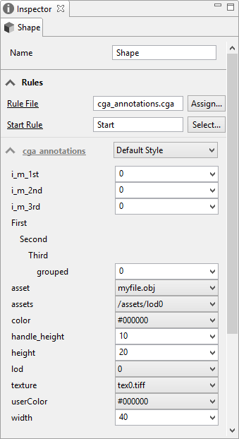

Annotations
Synopsis
@StartRule
@Hidden
@Hidden(attr_1,...,attr_n)
@Group("level_1-group", ..., "level_n-group")
@Group("level_1-group", ..., "level_n-group", order)
@Range(min, max)
@Range(value1, value2, value3, ...)
@Color
@File
@File("ext_1", ..., "ext_n")
@Directory
@Order(order)
@Description("description")
@Handle(handle_params)
@InMesh
@InPolygon
@InEdge
@InPoint
@InPointCloud
@Angle
@Percent
@Distance
@Out(granularity=separatedShapes|combinedShape)
Annotations are used to add additional information to a rule or an attribute. Annotations are optional and do not affect the semantics of a rule and thus have no influence on the model generation. Annotations are mostly used to give additional hints for user interface elements such as the Inspector on how to present attributes or rules.
@StartRule: Mark a rule as a start rule for the start rule chooser@Hidden: Mark an attribute or rule as hidden. Hidden attributes won't appear in the CityEngine inspector or start rule chooser, but they will be connected to matching object attributes automatically.@Hiddencan also be used to hide a set of attributes (as in its second form with a list of attribute names) before animportstatement. Without explicitly naming the attributes,@Hiddenbefore an import statement will hide all imported attributes in the inspector; the hidden annotation will be recusively propagated to the imports of the hidden import.@Group("level_1-group", ..., "level_n-group"): Set the group of the following attributes (the inspector will group attributes accordingly). The current group is maintained accross imports. To leave the current group, use @Group.@Group("level_1-group", ..., "level_n-group", order): Set the group and the sort order for groups/subgroups in the inspector (similar to@Orderfor attributes). Whereorderis a numeric value.@Range(min, max): Set the numeric range of an attribute to min, max (inclusvie)@Range(value1, value2, value3, ...): Set the range to specific values. Values can be numeric or string.@Color: Mark an attribute as a color attribute which will present a color picker in the inspector.@File: Mark an attribute as a file name. The inspector will present a file chooser.@File("ext_1", ... , "ext_n"): Mark an attribute as a file name. The inspector will present a file chooser for the given file extensions ("ext_1", ... , "ext_n")@Directory: Mark an attribute as a directory name. The inspector will present a directory chooser.@Order(order): Sets the sort order for an attribute in the inspector. Whereorderis a numeric value.@Description("description"): Adds a description to an attribute or rule which will be displayed as tooltip in the inspector or as description in the start rule chooser or style manager. Use \n for linebreaks.@Handle(handle_params): Adds an interactive handle to the following attribute.@In{Mesh|Polygon|Edge|Point|PointCloud}: These annotations can be used to communicate the expected geometry type of the start shape. While these annotations currently have no effect in CityEngine, ArcGIS Pro expects each start rule (see above) to be annotated with the expected input type (as of ArcGIS Pro 1.1, onlyInPolygonandInMeshare supported). If there is none, it defaults to@InPolygon. So if you export a rpk to be used with different geometry types in ArcGIS Pro, make sure you add one of these annotations.@{Angle|Percent|Distance}: Mark the attribute as{Angle|Percent|Distance}. Currently, this is only supported in ArcGIS Pro.@Out(granularity=separatedShapes|combinedShape): This annotation can be used to communicate the suggested granularity of the output geometry. The default iscombinedShape. While this annotation currently has no effect in CityEngine, it is essential to trigger leaf shape generation in ArcGIS Pro. Add it to the start rule in that case.
Example
Adding annotations
@StartRule
Start-->NIL
@Hidden
attr hide_me = 0
@Hidden
import hide_all_attrs: "imported.cga"
@Hidden(some_attr, another_attr)
import hide_some_attrs: "imported.cga"
@Group("First", "Second", "Third")
attr grouped = 0
@Group
@Range(5, 50)
attr height = 20
@Range(0, 1, 2)
attr lod = 0
@Range("#ff0000", "#00ff00", "#0000ff")
attr color = "#000000"
@Color
attr userColor = "#000000"
@File
attr asset = "myfile.obj"
@File("tif", "tiff")
attr texture = "tex0.tiff"
@Directory
attr assets = "/assets/lod" + lod
@Order(1)
attr i_m_1st = 0
@Order(2)
attr i_m_2nd = 0
@Order(3)
attr i_m_3rd = 0
@Description("The building width")
attr width = 40
@Handle(shape=Solid, align=right)
|

Annotated attributes displayed in the Inspector.
Copyright ©2008-2017 Esri R&D Center Zurich. All rights reserved.